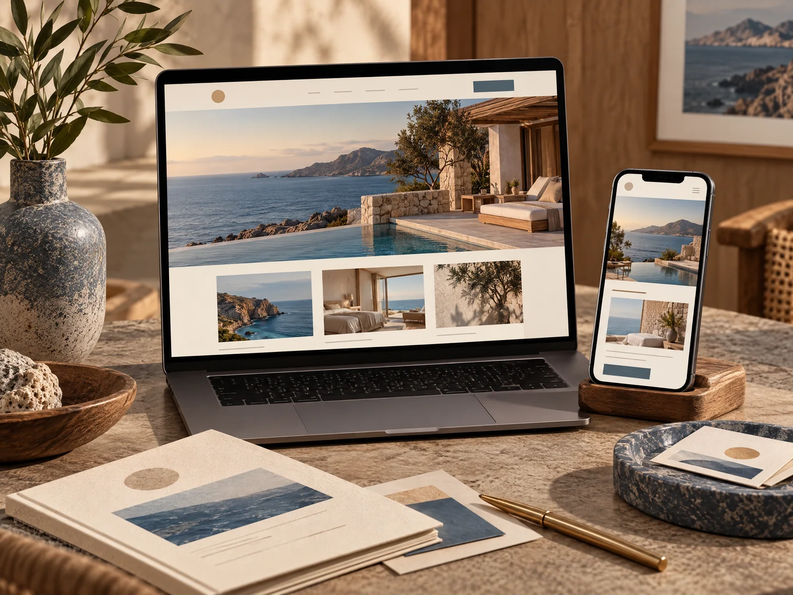
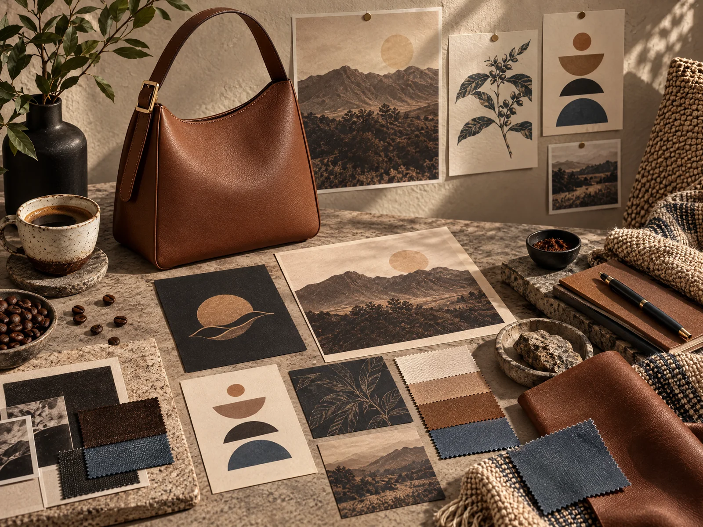
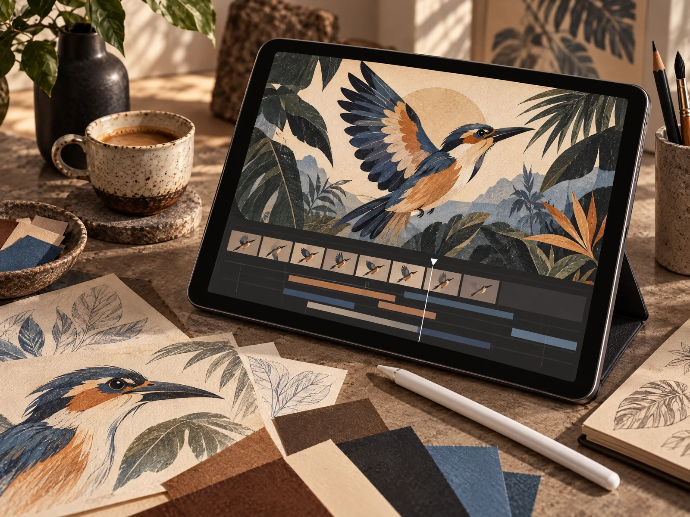
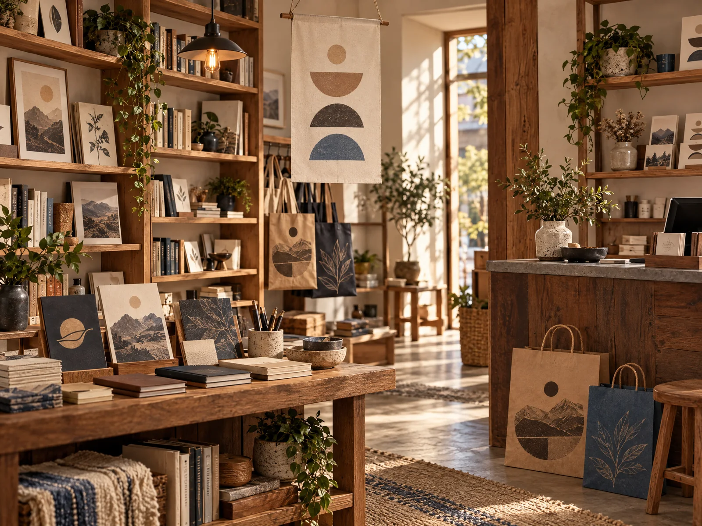

Portafolio
Proyectos que convierten ideas en presencia.
Explora ideas de identidad, experiencias digitales y piezas gráficas creadas para comunicar con intención.
Muestras creativas.Conceptos visuales para imaginar cómo una identidad, una web o una campaña pueden tomar forma.




Cada pieza explora una forma distinta de resolver una necesidad visual. Las propuestas finales se desarrollan a la medida de cada marca.
¿Quieres que tu proyecto se vea tan especial como lo imaginas?
Cuéntanos qué quieres construir y prepararemos un punto de partida.
Cuéntanos tu idea